Elizabeth Park Rose Garden, Hartford, Conn.
| Nikon D3, 105mm f/2.8 FX AF MICRO-NIKKOR
When I got back to Connecticut I went to a cool garden with my friend Julia. I used same camera-lens combo I started using in Utah. I think was a good choice for the flowers and bugs, but next time I do stuff like this I'll borrow my dad's D610 with a more landscape-oriented lens to get more of the garden layout because it's really cool. There were a lot of waterfowl as well, I wish I had managed to get sharper pictures of them.
Purple
❏ On a Bush
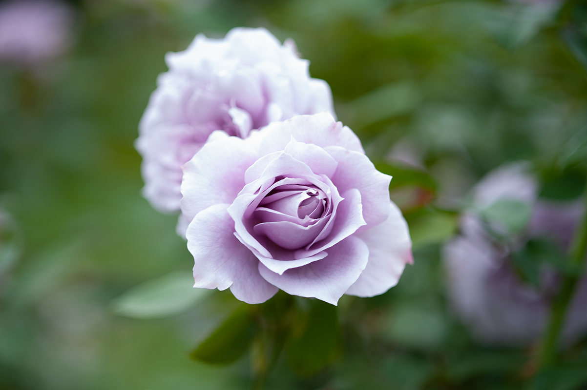Such a cute color, so soft looking!
Pink
❏ On a Bush
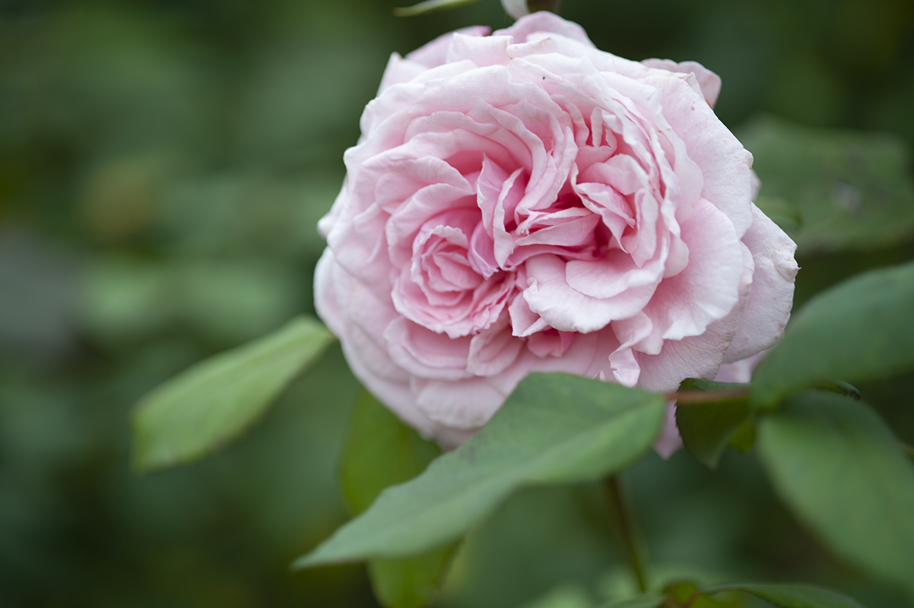The swirly patterns in this are so pretty!
❏ From the Ground
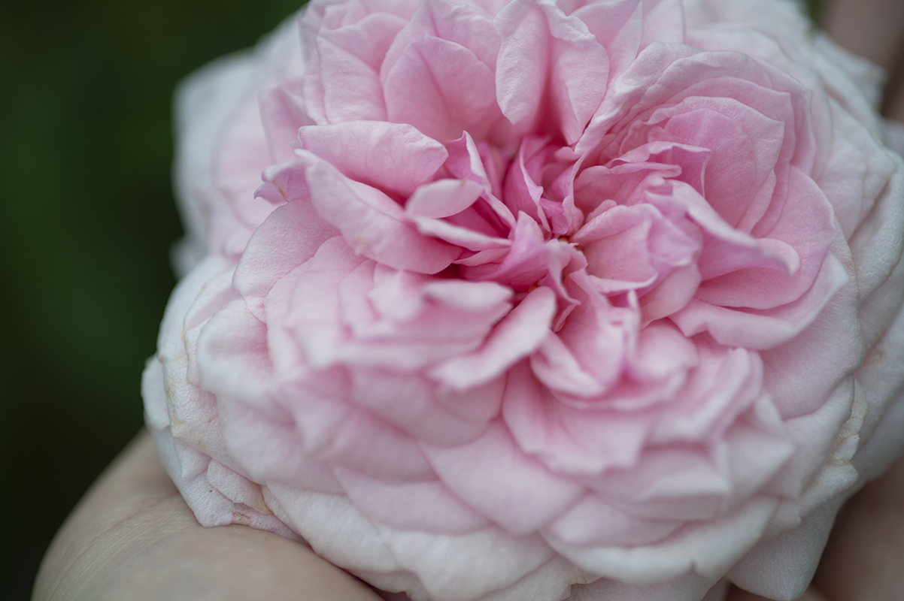This poor rose fell to the ground... Thanks for holding it for me, Julia!
❏ Close up
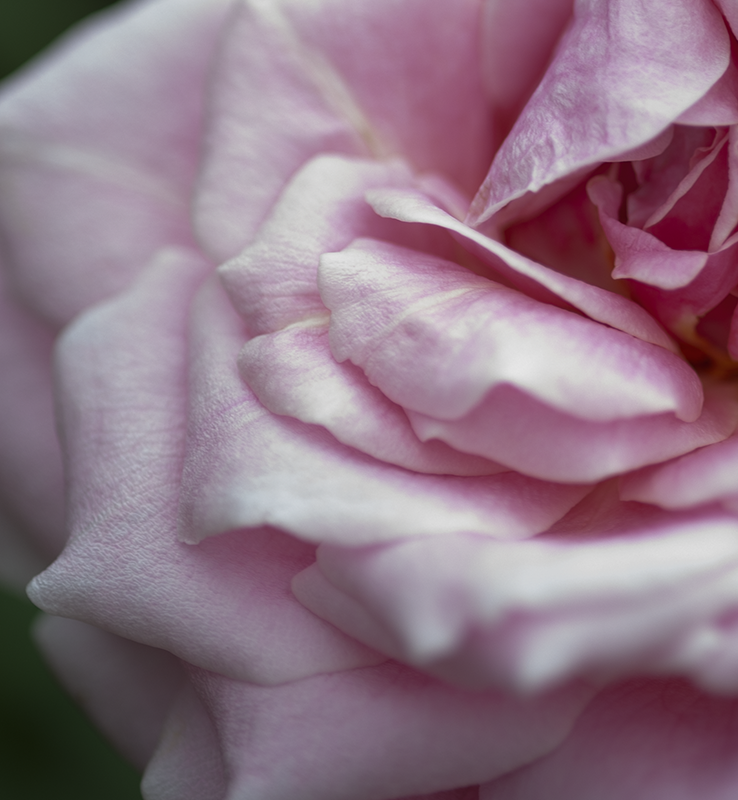Woah look at the texture on the petals... so pretty...
Red
Certified all-time classic rose color, not gonna lie.
❏ Julia poking a rose
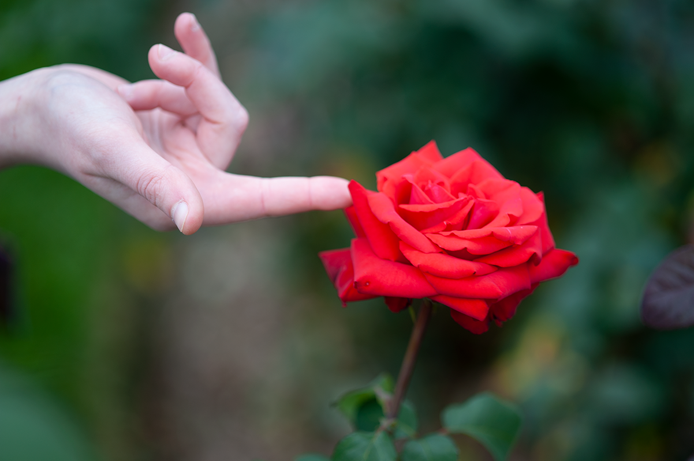Thanks, Julia!
❏ Standing
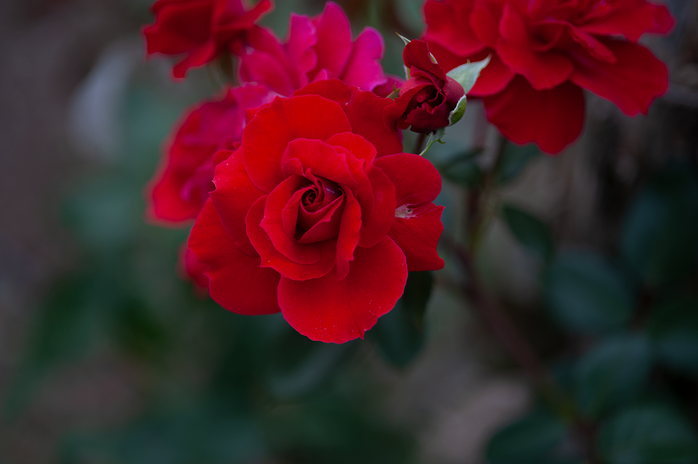I love the archetypal swirl-in-the-middle like drawn roses have.
❏ Hanging
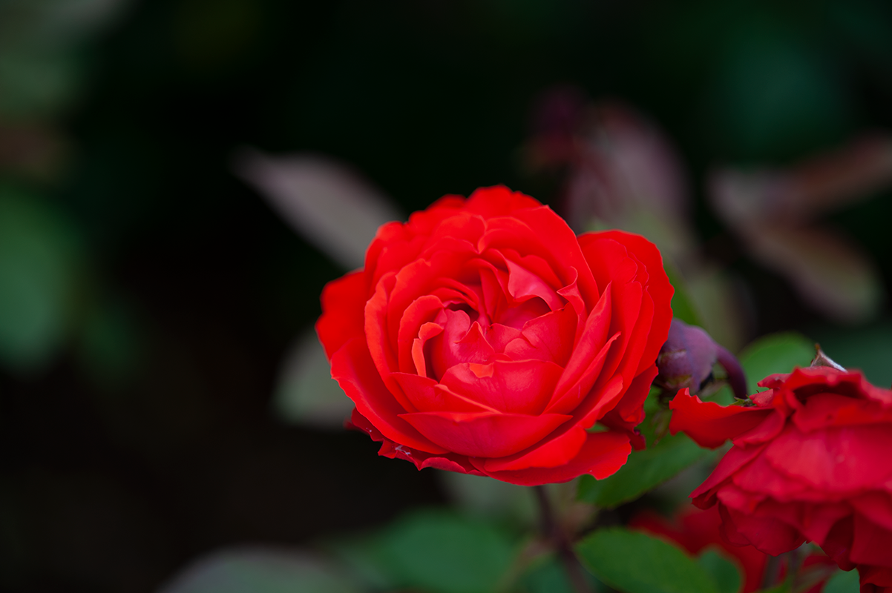So red right out of the camera... Maybe too red... Maybe I should've dialed it back.
Yellow
Yellow roses, did you even know there was such a thing?
❏ On a bush
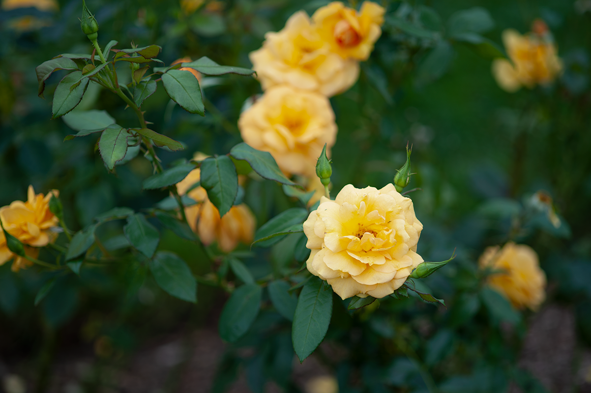I love this color of yellow.
❏ On its own
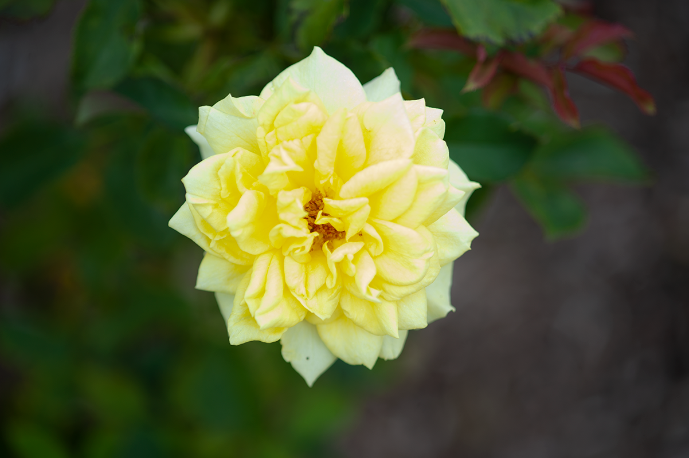This paler yellow is alright too, I like the texture of this one though.
White
We were so lucky as to get to see some unfinished roses they hadn't gotten around to painting yet! What a treat.
❏ Square Petal Rose
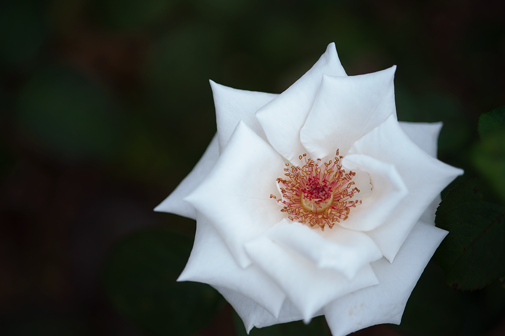I like the square petals and stamen/pistil stuff in the middle. Pretty flower.
❏ On a branch
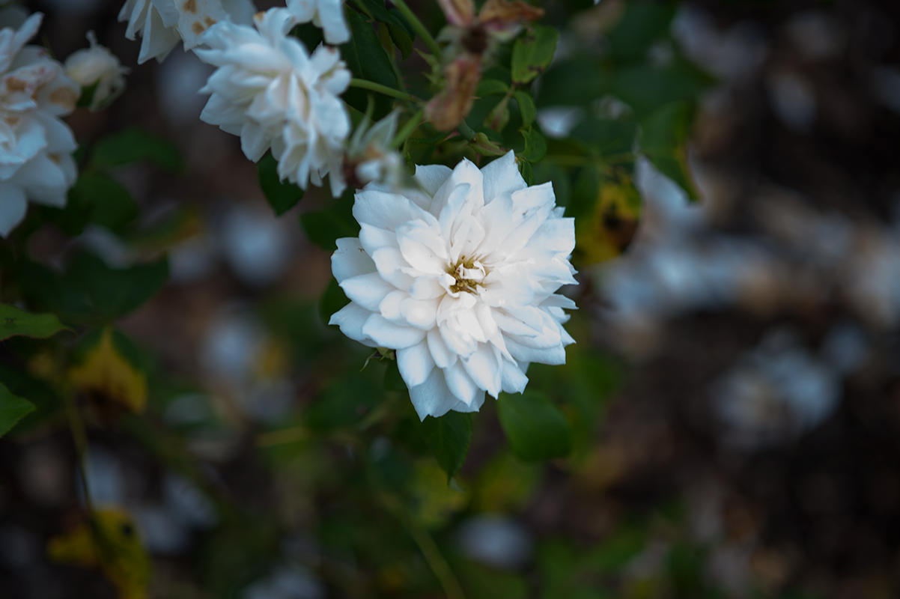I love how this one glows in the light. What a great flower.
❏ Freckles
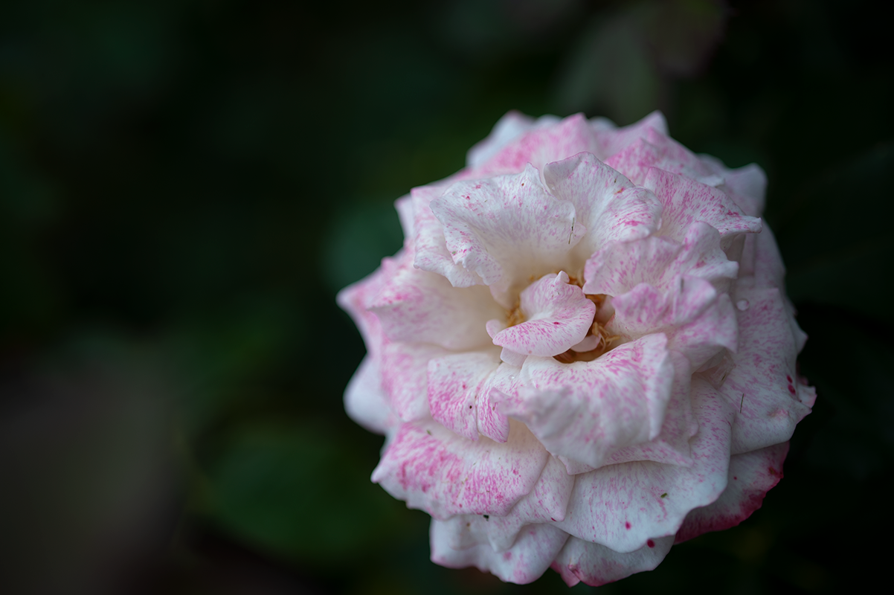A spotted freak, just like me!
Other Flowers
There were some non-roses at the garden! Herbs too, I wanted to snack on those real badly...
❏ Canna

I love the purpley stem parts peeking out from the red. The large and dark leaves at the base. What a cool flower.
❏ Cock's Comb

There were a lot of different colored Cock's Combs around, but these violet ones were so vibrant.
❏ Zinnias

I love these, I wish I brought a wider lense so I could have caught more!
❏ Marigolds

More like "mari-orange" if you ask me...
❏ Yummy Rosehips

We ate a couple of these... so good... Be careful of the thorns inside!
Bee
❏ Woah Bee
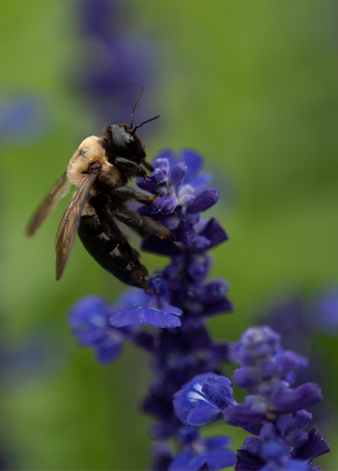So happy with the detaill in the fur and wings. Love seeing the cute little arms and legs. If you look close in some of these you can see the bee's secondary eyes!